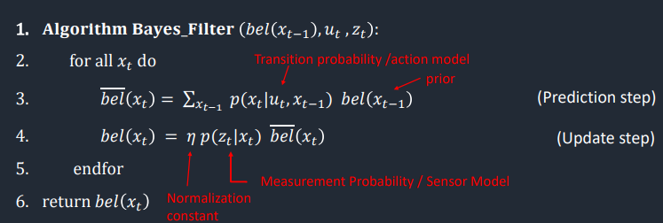
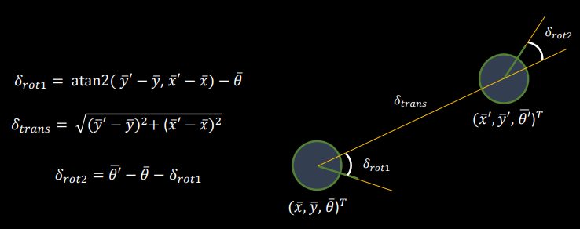
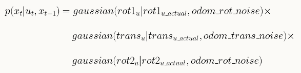
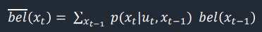
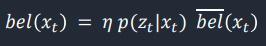

Objective
The aim of this lab is to implement grid localization using Bayes Filter.
Implementation
Bayes Filter Algorithm
The algorithm used to implement Bayes Filter is shown in the following figure from lecture slides. This filter takes in control inputs u_t, sensor readings z_t, and a belief matrix bel[x_(t-1)] represented by the set of probabilities of each grid cell. In each iteration of the Bayes filter, there are two steps. The first step, prediction step, incorporates control input (movement) data and update the belif matrix accordingly. The second step is an update, where the filter uses observation (measurement) data to reduce uncertainty in the belief of the system.

Prediction Step
To obtain the prediction bel_bar(x_t) of the current state, the estimated state of the previous time step bel[x_(t-1)] and the state transition model are needed.
Compute Control
For any two poses, which are represented as x, y, theta tuples, the actual control input u(t) used to transition between them can be decomposed into three stages: an initial rotation, followed by a translation, and finally another rotation. The equation and schematic are shown below, taken from the lecture slides:

The implementation of the function is as follows.
Odometry Motion Model
The odometry model calculates the likelihood of the robot ending up in the current state cur_pose, with a given control input u applied to the previous state prev_pose. To calculate the probability, a Gaussian function was employed to model noise. The rotations and transformations were assumed to be independent events, so that the overall probability of the robot's motion could be obtained by simply multiplying the three terms together, as demonstrated in the formula and the code implementation below.

Prediction

In this step, the probability of the robot to end up in every possible state, given its previous state and control input, is determined. Therefore, this function requires two sets of loops, each containing three for loops, to iterate over the x, y and theta dimensions of the previous state and the current state, respectively. Given that the grid of x*y*theta has 12×9×18 = 1944 possible states, an approximation was used to shorten the computation time. This means that if a state has a probability less than 0.0001, it can be skipped as it doesn't contribute significantly to the belief. Finally, the belief matrix was normalized to ensure that the probabilities of all states sum up to 1.
Update Step
In the update step, sensor readings are used to reduce uncertainty and figure out the robot position more accurately.
Sensor Model
This function calculates the probability that the sensor observations match the true observations for a specific pose, denoted as P(z_t|x_t). It outputs an 18-element array as the robot rotates in a circle to obtain 18 individual measurements, and each measurement corresponds to a calculated probability based on the observed and true values. Same as the Odometry Model, this function also employs a Gaussian function to model the probability distribution.
Update

In this step, the estimated belief from the prediction step is adjusted based on the sensor readings. Each belief in bel_bar is multiplied by the probability of obataining the current sensor readings corresponding to the specific grid. This results in an updated bel array, which is then normalized in the end.
Results
The following video demonstrates the localization result of the implemented Bayes filter along the sample trajectory. The simulation platform at top right displays the robot's actions throughout the trajectory, while the plot below shows the map bounds in white, the odometry info in red, the groung truth of the robot's position in green, and the belief in blue. On the left side is the log of the computation process.
Discussion & Conclusion
The Bayes Filter algorithm is really handy for estimating locations using often noisy inputs through statistics and calculations. This simulation lab has provided me with an understanding of this fascinating algorithm, which will be useful for the next lab where I will be locating the robot in the real world. Big thanks to Jonathan and the TAs' clear explanations, as well as Weizhe's implementation example, which helped me fully understand and apply the algorithm.
References
Lab tutorials
Lecture Slides: Motion Models
Lecture Slides: Sensor Models
Lecture Slides: Bayes Filter
Bayes Filter Implementation by Weizhe Zhao